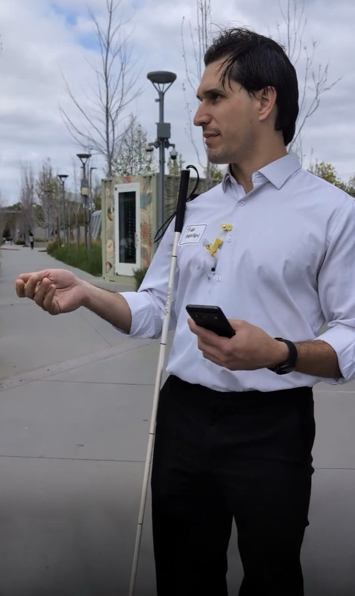
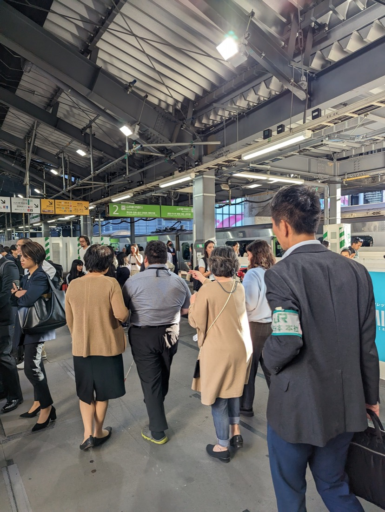

00Services
Senior product design, with accessibility and older adults at the center.
The ownable thing is the specialty: accessibility and older adults, delivered at Staff and Principal altitude. Magnifier reached 4.8 stars and 154K monthly users on that footing.
Most accessibility help arrives from compliance and audit. I focus on the product, which means the work is judged by what ships and how it feels to the people using it.
01 / Product & systems design
Senior IC design that makes accessibility the default.
I own design direction across PM, engineering, and design, not just the comps. That means accessibility-first features and the design-system work that makes them repeatable, so the next team inherits the right defaults instead of rediscovering them.
Two shapes of it. Senior IC app design, the way Magnifier and Guided Step were built. And accessible design-system transformation, the way Simple View pulled accessibility out of buried settings and into the main flow.
Direction-setting from research through ship. Design-system audits and the patterns to fix them. Accessibility annotations engineers can build from without a translation layer.
Magnifier: 4.8 stars, 154K monthly active users.
Simple View: up to 80% conversion by moving accessibility into onboarding.
02 / Co-design facilitation
Disabled users and older adults as partners who shape the product, not testers who validate it late.
The usual pattern brings disabled users in at the end to check a finished design. I bring them in at the start, as people whose judgment moves the direction. It changes what gets built, not just what gets caught.
The work includes workshop design, participant recruitment through a subcontracted recruiter or the client org, multi-session series with blind and low-vision users and older adults, video documentation, and synthesis that feeds real product decisions. It has run in Tokyo, Washington D.C., and elsewhere in the US.


A multi-session series with the right participants, structured so their input arrives early enough to change the design, with documentation the whole team can watch.
Guided Step: global co-design across three continents, −44% obstacle hits.
Simple View: older Japanese adults, designing for confidence rather than measured capability.
Paid partners, in the room while it still matters.
Here is what it actually involves, so you know what you are buying.
- PartnersDisabled users and older adults join as design partners, recruited for the problem and paid for their time.
- SessionsA multi-session series, not a single stop. Trust and detail build across meetings.
- InfluenceTheir judgment shapes product decisions early, while the direction can still change.
- WhereRun in person in Tokyo and Washington D.C., and elsewhere across the US.
03 / Strategic advisory
Lower time, higher leverage.
When you need senior judgment more than senior hours. Program assessment, design-team coaching and critique, and roadmap and prioritization work, sized so a few focused sessions move a lot.
A standing critique seat with your design team. An accessibility program assessment with a prioritized path. A working session that untangles a roadmap.
Google Home light system: 25M+ devices, Red Dot award.
Calling on Assistant: 450K+ monthly active users.
04 / Accessibility office hours
Embedded, ongoing support that builds a team's capability over time.
This is the highest-leverage shape, and it is how I already work with a Fortune 100 design org: embedded, on a retainer, a standing seat teams bring their real accessibility questions to. The aim is capability that stays after I do, not a stack of one-off deliverables.
A recurring block of senior time on a retainer or subscription basis. Design reviews, pairing, and pattern decisions, so accessibility becomes something the team owns.
Scoped project
A defined piece of design, or a design-system assessment with a clear end.
Embedded / ongoing
Accessibility Office Hours on a retainer. Capability over time, not just output.
Advisory
Lower time, higher leverage. Assessment, coaching, prioritization.
Engagements are scoped to outcomes, from a short assessment to multi-month embedded work. No public pricing. If we are a fit, I will send a scoping conversation invite.
Not sure which shape fits? Start with a conversation.
Tell me what you are building and who it is for. I will tell you honestly whether I am the right person, and what the engagement would look like.
Start a conversation